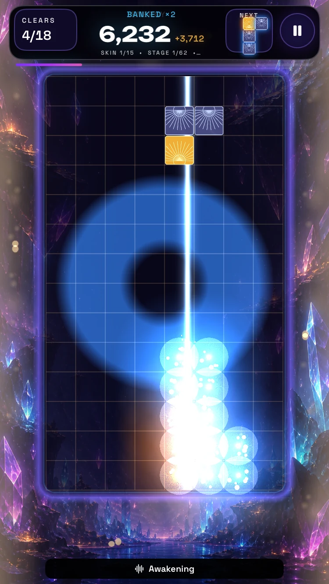

Build the light.
Break the darkness.
A homebrew game for iPhone & Apple TV · In development
Find a rhythm in falling crystals. Connect, compose, and watch your world answer every clear.
Development builds are being tested. A public download is not available yet.

Make a match.
Make it matter.
Three or more crystals of the same type, connected side to side, charge a network. They wait for the Pulse Line. Build another before the sweep arrives, and bank a bigger payoff.
The sweep is your instrument.
Rotations, drops, and clears bring light and sound into the world. Each skin pairs its own crystal material with a soundtrack, and music fades into the next as the journey progresses.
A Core block activates inside a valid match, reaching through the connected same-type chain. Isolated blocks elsewhere stay on the board.
Awakening · Press Play to hear the game’s soundtrack. Music added to the October 13 development footage; this preview does not include live gameplay sound effects.
Fifteen faces
of the light.
From frosted dawn glass to electric circuits, paper folds, and stained glass. These are captures from the actual game, with the board and crystal materials visible.
Current development captures · Seeded QA play with the tide suppressed. Captions name crystal materials; in-game labels may name campaign tracks. Scroll horizontally to see all fifteen.

Your rhythm.
Your way to see.
Crystal identity goes beyond color. Distinct symbols, high-contrast outlines, color-vision palettes, and adjustable difficulty help keep the board readable.
Dedicated modes cover protanopia, deuteranopia, tritanopia, their anomaly variants, achromatopsia, and achromatomaly. Reduce Motion and reduced effects let you choose how much the world moves.
On Apple TV, play with a controller or the Siri Remote. Physical clickpad buttons work with touch tracking disabled; swipes are optional.
Accessibility and physical-device testing are ongoing during development.
The light awaits.
Prism Shift is a non-commercial homebrew project by Ian Trimble.
More from Remnant Security